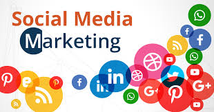

Social media
Social media can be used to build your brand identity, to reach out to your existing customers and to find new audiences. It can be used for thought leadership, to enhance your SEO rankings and as a direct channel for people to interact with your brand. Most organisations already know this, but they invest hours in social media management without having a good idea of how to get return on investment.
The key to using social media is knowing what you’re using it for. Are you looking to create brand awareness? Then that goal needs to inform the way you use social media – you need to target your audience, create relevant content and maintain a strong brand.
What tools to use and why?
If you’re looking for greater visibility over your social channels, detailed insights about what is does or doesn’t work or greater control over publishing posts through automation and scheduling, these tools can transform what’s possible with social media. If you want to produce quality posts that engage and grow your social following across multiple channels, then these tools are exactly what you need.
Hootsuite is one of the most popular tools for enhancing your social media output. It supports over 150 integrations, allowing users to update multiple networks in one step. It’s also capable of analysing over 200 metrics, so you can create a dashboard that perfectly tracks your business’s goals . It’s the perfect first tool to get started when you’re investing in your social media management.